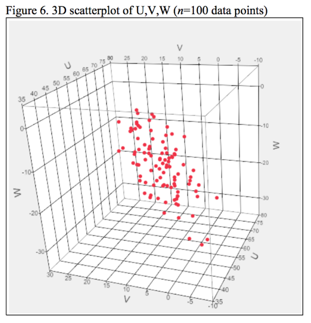

3 Week 3 Correction
3.1 Summary
This week we mainly talk about two main section, one is correction, another is about images enhancement. There are lots of reasons cause images become incorrect, which will bring lots of inconvenience in further analysis. All these factors will bring some obstacles for our following research. In that case, it is necessary to correct and enhance images. Although there are many methods which can improve the quality of images, different methods need to be chosen carefully for different scenarios and purposes.
3.1.1 Corrections
3.1.1.1 Geometric correction
Geometric correction refers to the process of correcting distortions in spatial data, particularly in images or maps, to ensure accurate representation of the Earth’s surface. The goal of geometric correction is to align the features in the data with their true geographic locations.
some key points:
Selection of Control Points
Control points are identifiable features that have known geographic coordinates. These points are used to establish a relationship between the spatial data and the real-world coordinates.
how to select ?
In the spatial data, some clearly recognisable features or characteristics are selected, such as road intersections, building corners, river crossings, etc. These features should be clearly visible in the image and have a well-defined location geographically.
Transformation Model
-- the relationship between the control points (the spatial data) and their corresponding real-world coordinates. Common transformation models include polynomial transformations, affine transformations, or rubber sheeting.
Resampling
Nearest Neighbor
Linear
Cubic
Cubic spline
we must re-sample the final raster because we can adjust the pixel values of the corrected image to the new pixel grid.
3.1.1.2 Atmospheric correction
Atmospheric corrections help to remove the effects of atmospheric media (which would reduce contrast of image) on remotely sensed images in order to obtain more accurate surface reflectance or radiance values, resulting in better contrast between images acquired at different times and locations.
How to do?
Dark object subtraction (DOS): Searches each band for the darkest value then subtracts that from each pixel. (Some objects’ DN values are theoretically 0, such as deep water bodies or shadows.Therefore, any value that it has can be attributed to the atmosphere and need to be removed.
3.1.1.3 Topographic correction
Orthorectification is a geometric correction process applied to satellite or aerial imagery to remove distortions caused by terrain variations, sensor viewing angles, and Earth curvature
3.1.1.4 Radiometric correction
convert TOA radiance to TOA reflectance
Radiance is how much light the sensor sees.
Reflectance is the ratio of light leaving the target to amount striking the target. Here will still have atmopsheric effects in the way of our true apparent reflectance. Confusingly all of these can be termed reflectance and indeed sometimes radiance is referred to as reflectance.
The purpose of radiometric correction is to standardize pixel values across an image, making it more consistent and suitable for quantitative analysis.
3.1.1.5 Different level
Level 1 is delivered as a Digital Number (DN 值)
Level 2 includes surface reflectance and surface temperature
Level 3 science products are specific products generated from the data such as Burned Area, surface water extent
3.1.2 enhancement
3.1.2.1 Radio
NDVI: (NIR-RED) / (NIR+RED)
NDWI: (NIR - SWIR) / (NIR + SWIR)
( NIR is the reflectance in the near-infrared band; SWIR is the reflectance in the shortwave infrared band.)
3.1.2.2 PCA
Principal Component Analysis (PCA) is designed to reduce the dimensionality of our data.
Running the summary will given the proportion of variance explained by each PCA component and the cumulative proportion of the variance explained (from all the PCA layers compared to the original input data). Overall, PCA is trying to:
Transform multi-spectral data into uncorrelated and smaller dataset
Keep most of the original information
The first component will (should) capture most of the variance within the dataset
“A big take-away from this is that system of linear equations are equivalent to a rotation of coordinate systems, which are change of perspective”

PCA chooses the new axes sequentially one after another--PCA looks at the data from all possible angles and figures out which of the infinite number of perspectives spread out the data the most. The first new axis is the one which the data are maximally spread out. So the first new axis would have the most information for distinguishing the points from each other.
“Loading is the correlation between an original variable and a principal component.”
Cracking Principal Components Analysis (PCA) — Part 2 | by Hyeon Gu Kim | Medium
3.1.3 Filtering
- Filtering refers to any kind of moving window operation to our data which can be saved as a separate raster file. As we saw in the lecture this can include low or high pass filters.
3.1.3.1 low pass
a smoothing (low-pass filter 低通滤波) algorithm will take the mean value of a 3-x-3 cell kernel, and place the output value in the location of the central cell.
3.1.3.2 high pass
Edge enhancement:
accentuates or highlights the boundaries and edges of objects within an image.
The goal is to make the edges more visually prominent and improve the overall sharpness and clarity of the image
Where is edge? the change in pixel values
3.2 Application
3.2.1 application of Corrections
Digitising paper maps is a process of aligning paper maps with modern geographic coordinate systems so that they can be used for vectorisation and integration with other GIS datasets. This process can facilitate the effective use of historical maps, house plans, etc. in a modern GIS environment. (Geometric correction)
NDVI is an index of vegetation condition that is based on reflectance in the red and near-infrared bands, and therefore atmospheric influences need to be taken into account before it can be calculated. Atmospheric correction is crucial for precise quantitative analysis and vegetation monitoring. If your application requires accurate reflectance values or vegetation indices, it is advisable to conduct atmospheric correction to eliminate atmospheric effects. (Atmospheric correction)
3.2.2 enhancement
3.2.2.1 PCA
3.2.2.2 smooth
3.3 Reflection
The week’s content was most valuable in enhancing our comprehension of various calibration techniques for remote sensing image data. It also provided an introduction to the principles of linking and enhancement. Although a significant portion of remote sensing data is pre-calibrated before acquisition, it remains crucial for us to comprehend the processing steps, as not all data undergoes this preparation. Additionally, a thorough understanding of the suitability and constraints of different methods is essential for their identification and critical evaluation in future applications.